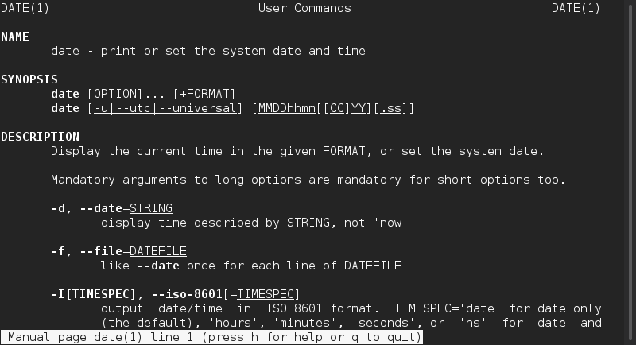

After completing this lab, students will be able to:
ssh, logout and exit)cd, pwd)ls)find)less and cat)grep)A shell is interactive command interpreter: a program that takes text input from the user in the form of commands and arguments, instructs the operating system to execute the tasks specified by the user input, and provides output that results from the execution of the commands by the operating system.
Access to a shell is typically obtained though software known as a terminal emulator, which in this day an age is simply referred to as a terminal. Examples of terminal emulators are:
Just as there are many terminal applications, there are also several shells. Examples of shells are:
A shell is more than just an interactive command interpreter. It is capable of also interpreting input from files (called shell scripts). A shell also provides a high-level programming language that can be used to specify complex tasks to operating system.
Open the terminal emulator application that is available in your computer. If you are using a MacOS or Linux system, the Terminal application will immediately create a shell session with your local operating system.
In this course, however, you are required to log into the blue.cs.sonoma.edu host. To establish a remote session with “blue”, you will use the ssh command.
The basic syntax for this command is ssh <username>@<host>, where username corresponds to your user and host to the name or IP address of the remote host. Type the following, substituting me with your username.
[jorge@localhost ~]$ ssh me@blue.cs.sonoma.edu me@blue.cs.sonoma.edu's password: Welcome to Ubuntu 14.04.5 LTS (GNU/Linux 4.4.3-201.fc22.x86_64 x86_64) * Documentation: https://help.ubuntu.com/ Last login: Sat Jan 21 20:11:54 2017 from 172.17.0.1 [me@blue ~]$
Note
You might be asked to confirm the authenticity of the host blue.cs.sonoma.edu.
If you are connected to the University’s network, it is safe to accept by typing yes.
The welcome message might also be different from the example output.
Notice that after launching the terminal emulator and after logging into a remote system, you get a short sequence of characters before the cursor.
In the example above you can see the [jorge@localhost ~]$ prompt in the local shell and [me@blue ~]$ prompt in the blue.cs.sonoma.edu remote shell.
You do not have to type the prompt in the examples. The prompt is the way for the shell to tell you that it is ready to accept input.
Prompts are customizable, and you will see later in this course that they can be very useful.
In the example output, the prompt from blue.cs.sonoma.edu lets you know that the user me is logged in the blue host and that the current working directory is ~ (We will go into the details of directories pretty soon).
You can enter an edit commands in the shell after the prompt.
Once you have typed the command, you need to press ENTER to trigger the execution of the command.
Try running the date command:
[me@blue ~]$ date Sun Jan 22 00:10:43 UTC 2017
Notice how the shell wrote back to the screen the result of the command.
Commands can be entered by themselves, as the previous example.
Most commands accept arguments when we need the command to perform an action with a certain input.
For example, the echo command can be used to write text on the screen:
[me@blue ~]$ echo 'Hello World' Hello World
Here echo is the command name (sometimes referred to as utility or program), and 'Hello World' is the argument.
Commands typically accept options (sometimes called flags) that modify the behavior of the command.
For example, the -n option causes the echo command to not append a new line to the output:
[me@blue ~]$ echo -n 'Hello World' Hello World[me@blue ~]$
You can obtain more information about commands by using the man utility. For example, to access the man page for the date command that we just executed:
[me@blue ~]$ man date
this will present a screen like this:
Scroll through the man page (by using the UP and DOWN keys, and see how the command’s syntax and options are explained in detail.
To exit the man page type q, this will cause the session to return to the shell prompt.
bash has several special key combinations that allow easy and fast command editing.
| keys | Function |
|---|---|
LEFT and RIGHT |
Move the cursor in the command line |
UP and DOWN |
Scroll through the command history |
CTRL+a |
Move the cursor to the begining of the command line |
CTRL+e |
Move the cursor to the end of the command line |
META+f |
Move forward one word |
META+b |
Move backward one word |
CTRL+k |
Kill (delete) the text from cursor to the end of the line |
CTRL+u |
Kill the text from cursor to the beginning of theline |
META+d |
Kill the current word |
META+r |
Undo all changes made to the line |
CTRL+l |
Clear the screen |
CTRL+r |
Search command history |
TAB |
Command or filename completion |
Note
The META key is not included in most modern keyboard layouts, however, the ESC key is used to “metafy” the next typed character. We maintain the reference to the META key for consistency with official documentation.
To practice these shortcuts, we are going to use the curl command and python to use the shell and the internet for our entertainment. Type the following command (if you make any mistakes use the LEFT and RIGHT to move the cursor to the right place and use BACKSPACE to remove unwanted characters)
[me@blue ~]$ curl -s http://api.icndb.com/jokes/random?exlude=%5Bexplicit%5D | python -m json.tool
That command should return one of things that I personally find most amusing from the internet: a random Chuck Norris joke.
However, having to type all that is not fun and it takes a lot of time. Luckily for us, there is an easy way to get another random joke without little effort: press the UP one time, and press the ENTER key. Feel free to repeat this a few times.
One of my favorite Chuck Norris jokes is joke number 458. We can get a specific joke by replacing random with the joke number, as an example:
[me@blue ~]$ curl -s http://api.icndb.com/jokes/458?exlude=%5Bexplicit%5D | python -m json.tool
{
"type": "success",
"value": {
"categories": [
"nerdy"
],
"id": 458,
"joke": "Chuck Norris can write infinite recursion functions and have them return."
}
}
Instead of typing everything again, try the following key strokes:
UP : recall the last command you ranMETA-b : moves the cursor one word back. You will need to do this at least 8 times, until the cursor is locaded under the “r” key from “random”. Notice how words are identified in terms of spaces and special characters.META-d : deletes the random word478: the joke that we wantENTER: to read joke 458Moving back word by word is definitely more eficient than one character at a time. However, we can move faster by moving to the especific place in the command that we want to edit. Joke 479 is pretty good too. Let’s see how we can get it quickly:
UP : recall the previous commandCTRL+r: enter reverse history search mode8: to position the cursor under the 9 characterLEFT: to exit reverse history search modeBACKSPACE: to remove the 8 character9: to complete the joke number we want (459)ENTER: to read joke 459To exit a shell session, type :command:exit. Note that if you are connected to blue, when you execute the exit you will be back in your workstation’s shell session.
Worksheet
-e option? What is the meaning of the \n in the command’s argument? What happens if you remove the single quotes that enclose the argument?blue? Compare this with the output when you are not connected to blue. What is effect of using the -i option with this command? Again, compare the output of running this command when executed in blue and when run locally.HellonLinux` in a single line. Provide a sequence of keystrokes that will cause the shell to print the word ``Hello in one line, and the word Linux on the next line.Files are organized in Linux in a hierarchichal directory structure, which means that they are organized in a tree-like structure. To do this